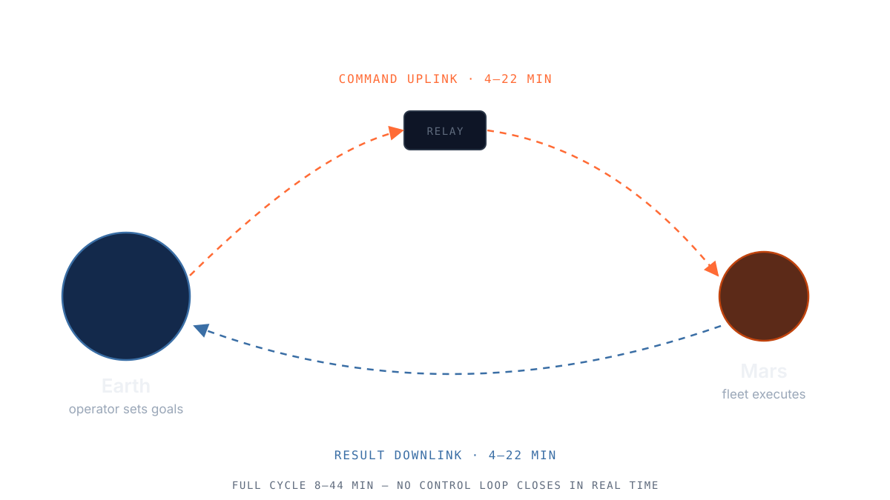
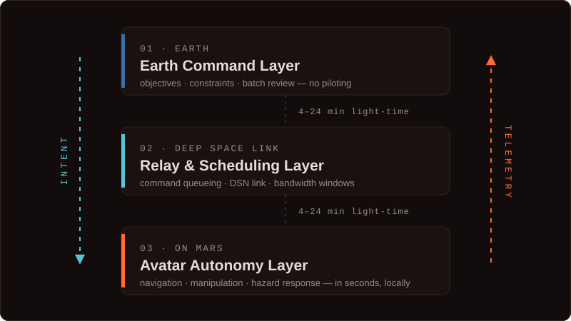
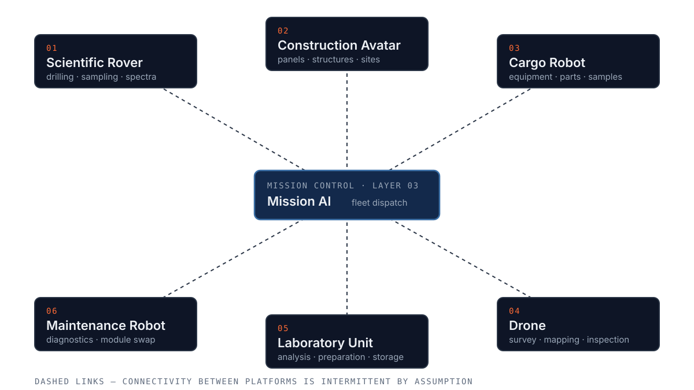

Overview
About the Project
Every second of latency between Earth and Mars makes direct teleoperation impossible. A joystick command sent from a control room on Earth can take up to twenty-four minutes to reach the surface — and just as long for the response to come back. Real-time remote control simply does not work at interplanetary distance.
The Mars Avatar Project explores a different model. Instead of a human pilot at the controls, a robotic avatar on Mars receives high-level intent — a goal, a constraint, a priority — and works out the low-level execution itself, in the moment, on-site. The human role shifts from operator to supervisor: reviewing, approving, and redirecting, rather than steering every motion by hand.
System Design
Architecture
The system is organized as three cooperating layers, each built to tolerate the communication gap between the two planets.
Earth Command Layer
Mission specialists define objectives, constraints, and safety envelopes. No moment-to-moment piloting — decisions are reviewed in batches as the signal window allows.
Relay & Scheduling Layer
Commands and telemetry are queued, prioritized, and transmitted across the Deep Space Network link, accounting for orbital geometry and bandwidth windows.
Avatar Autonomy Layer
Onboard the rover or robotic platform, local AI translates intent into action — navigation, manipulation, and hazard response — without waiting for Earth.
Onboard Intelligence
Mission AI
Mission AI is the decision-making system that lives on the avatar itself. It does not wait for permission to react to what it sees — a slope that's too steep, a rock that's too unstable, a sensor reading that's out of range. It handles these locally, in seconds, and reports back on the next communication pass.
What it does not do is decide mission priorities on its own. Strategic choices — which site to investigate, which sample to collect — stay with the human team on Earth. The avatar is trusted to execute safely, not to set the mission's goals.
- Local hazard detection and avoidance
- Path planning between waypoints set by Earth
- Manipulation task execution (drilling, sampling, deployment)
- Continuous self-diagnostics and fault reporting
Hardware Concept
Robotic Avatar Fleet
Rather than one general-purpose rover, the concept proposes a small fleet of specialized avatars that coordinate on shared objectives.
Survey Unit
Long-range mobility platform for terrain mapping and site reconnaissance ahead of other units.
Manipulator Unit
Fixed-base or short-range arm-equipped avatar for sample collection, drilling, and equipment handling.
Relay Unit
Stationary or elevated platform extending local communication range between avatars and orbital relays.
Development Plan
Roadmap
Concept & Publication
Formalize the architecture, publish the white paper, establish the open-source repository.
Simulation
Build a software simulation of the command → relay → autonomy pipeline under realistic latency conditions.
Prototype Testbed
Develop a small-scale physical or robotic testbed to validate autonomy behaviors in analog terrain.
Partnerships
Engage universities, research institutes, and aerospace organizations for collaboration and review.
Documentation
White Paper
The full technical concept — motivation, architecture, and open research questions — is available as a white paper.
White paper link will be added once published on Zenodo.
Visuals
Gallery
Concept diagrams of the mission architecture.



Get in Touch
Contact
Open to collaboration with researchers, engineers, and institutions interested in autonomous planetary systems.
EMAIL kvadratinho@gmail.com